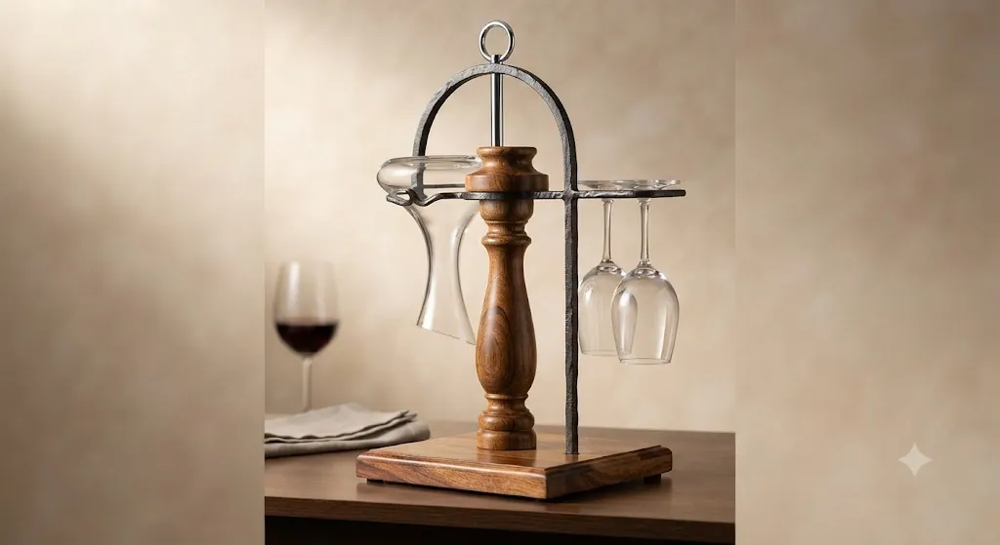

AA-WC-308 · Cat 31
Solid Wood Decanter Drying Stand & Glass Rack
Handcrafted Wine Aeration handcrafted export piece engineered for Williams-Sonoma, Sur La Table wholesale programs.
$8.50 – $11.00 FOB Mundra · per unit · MOQ 25 Pcs
| Material & construction | Turned hardwood counter stand with chrome loop post to hang wine decanter upside down |
|---|---|
| Dimensions | 10" x 8" x 16" H / 25 x 20 x 41 cm |
| Carton volume | 0.008 CBM / unit |
| Minimum order | 25 Pcs |
| Lead time | 45–60 Days (FOB Mundra) |
| Western retail benchmark | $45 – $60 |
| Style | Wine Aeration |
| Indicative HS heading | 9403.60 — Other wooden furniture |
| Typical buyers | Williams-Sonoma, Sur La Table |
Indicative HS heading only — your customs broker confirms final classification. Kiln-dried 8–10% moisture, ISPM-15 dunnage, VRIKSH / Lacey / EUDR paperwork on request.